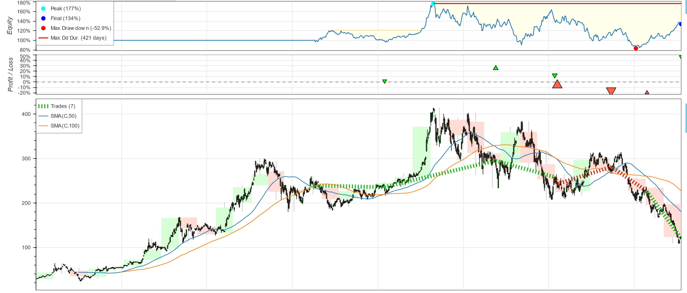
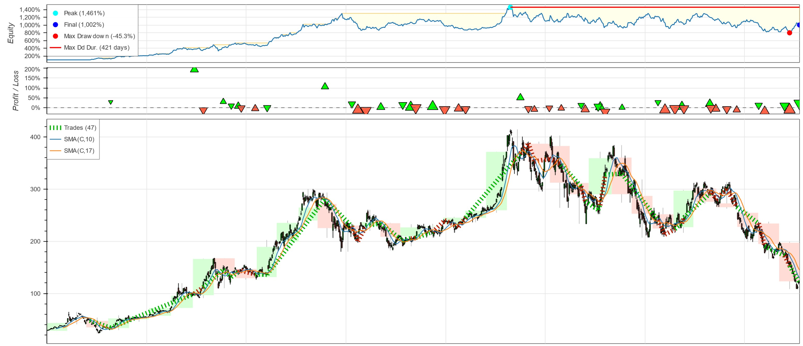
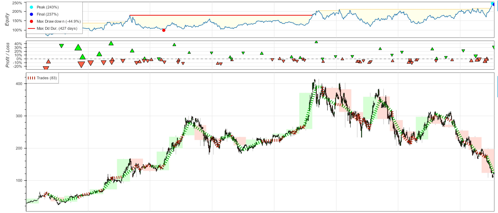

Objective: use Python with backtesting and talib library to back test strategies to confirm validity before putting strategy in use in stock market. Normally traders use popular indicators like SMA and MACD to help find stocks that are oversold to buy in and then wait until stocks are overbought to sell.
SMA - Simple Moving Average
Investopedia - How Are Simple Moving Averages Used in Technical Analysis?
"Traders use simple moving averages (SMAs) to chart the long-term trajectory of a stock or other security, while ignoring the noise of day-to-day price movements. This allows traders to compare medium- and long-term trends over a larger time horizon. For example, if the 200-day SMA of a security falls below its 50-day SMA, this is usually interpreted as a bearish death cross pattern and a signal of further declines. The opposite pattern, the golden cross, indicates potential for a market rally."
Popular values for SMA are 50 days, 100 days, and 200 days, but what happens if we change those values? Will it increase or decrease the ROI (return on investments)?
class MySMAStrategy(Strategy):
def init(self):
price = self.data.Close
self.ma1 = self.I(SMA, price, ma1_days)
self.ma2 = self.I(SMA, price, ma2_days)
def next(self):
if crossover(self.ma1, self.ma2):
self.buy()
elif crossover(self.ma2, self.ma1):
self.sell()
start = dt.datetime(2020,1,1)
end = dt.datetime(2023,1,1)
data = yf.download('TSLA', start, end)
ma1_days = 50
ma2_days = 100
backtest = Backtest(data, MySMAStrategy, commission=.002, exclusive_orders=True)
print(backtest.run())
backtest.plot(filename='sma_strat_default')
A simple python code using the backtesting library to set the base line of how changing values of the SMA lines will impact ROI for company Tesla.
Results:
| Info | Values |
|---|---|
| Start | 2020-01-02 00:00:00 |
| End | 2022-12-30 00:00:00 |
| Duration | 1093 days 00:00:00 |
| Return [%] | 33.899739 |
| Buy & Hold Return [%] | 329.438015 |
| Number of Trades | 7 |
| Win Rate [%] | 57.142857 |
| Avg. Trade Duration | 89 days 00:00:00 |
Here we can see that within the time frame of 3 years with 7 days we only made about 33.9% return, while if we Buy and Hold we will make more at 329.44%. So the default values of 50 days and 100 days is not as profitable.
Now lets change the value to something else, lets say 10, 17.
ma1_days = 10
ma2_days = 17
backtest = Backtest(data, MySMAStrategy, commission=.002, exclusive_orders=True)
print(backtest.run())
backtest.plot(filename='sma_strat_ideal')
Results:
| Info | Values |
|---|---|
| Start | 2020-01-02 00:00:00 |
| End | 2022-12-30 00:00:00 |
| Duration | 1093 days 00:00:00 |
| Return [%] | 901.722154 |
| Buy & Hold Return [%] | 329.438015 |
| Number of Trades | 47 |
| Win Rate [%] | 48.93617 |
| Avg. Trade Duration | 22 days 00:00:00 |
Using the new values of 10 and 17 days we can see that the ROI has shot up to around 901.72% vs 33.9% when using the default value. Additionally, vs the Buy and Hold ROI there is nearly a 600% increase, which makes this a really good strategy to try.
The following is the default vs ideal values graphed out so that you can see when and where the trades occurred more easily.


MACD - Moving average convergence/divergence
Investopedia - What Is Moving Average Convergence/Divergence (MACD)?
"Moving average convergence/divergence (MACD, or MAC-D) is a trend-following momentum indicator that shows the relationship between two exponential moving averages (EMAs) of a security’s price. The MACD line is calculated by subtracting the 26-period EMA from the 12-period EMA."
Now lets try out MACD and see how it compares to SMA.
class MyMACDStrategy(Strategy):
def init(self):
price = self.data.Close
self.macd = self.I(lambda x: talib.MACD(x,macd_fast,macd_slow,macd_signal)[0], price)
self.macd_signal = self.I(lambda x: talib.MACD(x,macd_fast,macd_slow,macd_signal)[1], price)
def next(self):
if crossover(self.macd, self.macd_signal):
self.buy()
elif crossover(self.macd_signal, self.macd):
self.sell()
start = dt.datetime(2020,1,1)
end = dt.datetime(2023,1,1)
data = yf.download('TSLA', start, end)
macd_fast = 12
macd_slow = 26
macd_signal = 9
backtest = Backtest(data, MyMACDStrategy, commission=.002, exclusive_orders=True)
print(backtest.run())
backtest.plot(filename='macd_strat_default')
Results:
| Info | Values |
|---|---|
| Start | 2020-01-02 00:00:00 |
| End | 2022-12-30 00:00:00 |
| Duration | 1093 days 00:00:00 |
| Return [%] | -28.476508 |
| Buy & Hold Return [%] | 329.438015 |
| Number of Trades | 59 |
| Win Rate [%] | 33.898305 |
| Avg. Trade Duration | 18 days 00:00:00 |
With the default MACD values we can see that the ROI is much worst than the Buy and Hold ROI, and also worst than the default SMA ROI. Now lets see if we can change that by changing the MACD values.
macd_fast = 10
macd_slow = 22
macd_signal = 4
backtest = Backtest(data, MyMACDStrategy, commission=.002, exclusive_orders=True)
print(backtest.run())
backtest.plot(filename='macd_strat_better')
Results:
| Info | Values |
|---|---|
| Start | 2020-01-02 00:00:00 |
| End | 2022-12-30 00:00:00 |
| Duration | 1093 days 00:00:00 |
| Return [%] | 137.303131 |
| Buy & Hold Return [%] | 329.438015 |
| Number of Trades | 83 |
| Win Rate [%] | 36.144578 |
| Avg. Trade Duration | 13 days 00:00:00 |
After changing the values multiple time the highest ROI I found with the MACD is around 137.3%, which is much better than the default, but still worst when compared to the Buy and Hold ROI and SMA ROI while having to do more trades.
Now lets see the MACD strategy graphed out vs the SMA ideal strategy.

Links
Please also take a look at the following links to the github repository and python code